Features
Web search
When a conversation needs live information, Nexon searches without leaving the chat: the query goes to Tavily, results are read and filtered, and the sources stay attached to the answer so you can check every claim. Add your own Tavily key in settings — searches run on your account, and nothing is sent anywhere else.
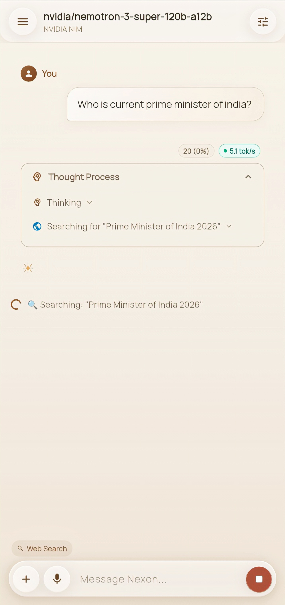
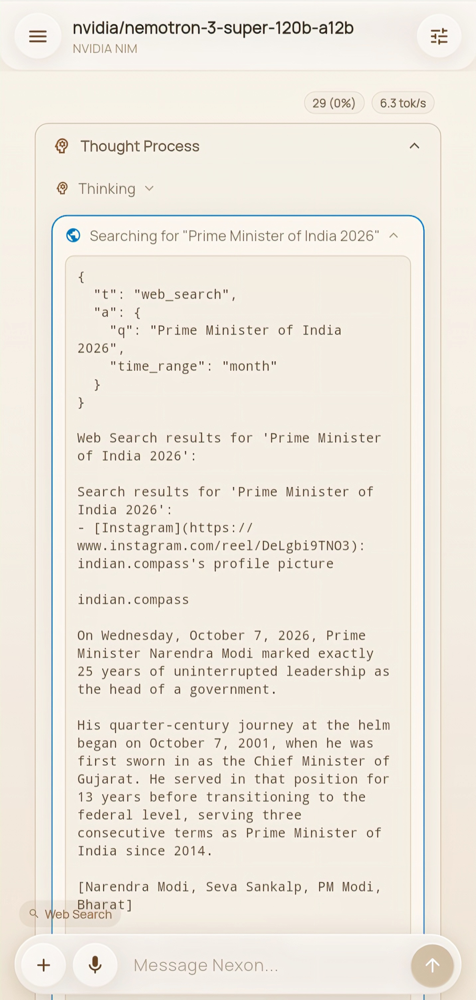
Deep research
Ask a question too big for one search and Nexon runs a three-phase pipeline: the planner decomposes it into concrete steps, the researcher searches live and extracts structured facts, and the synthesizer writes a cited report you can export. The whole engine runs on the phone — no vector database. Deep research is in beta: it works end to end, but results can occasionally be uneven, and it is being improved continuously.
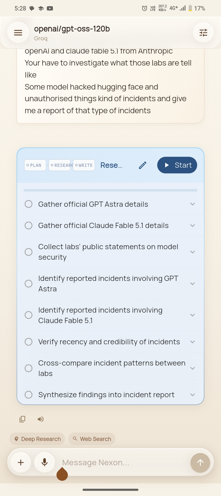
Agentic file access
Agents work on your files the way a careful developer would: they read files by line range, patch with red/green diffs you approve first, and every edit is snapshotted so any change can be rolled back. Multi-step work is tracked as a task list, and every tool call passes the permission guard — ask, session, always, or never.
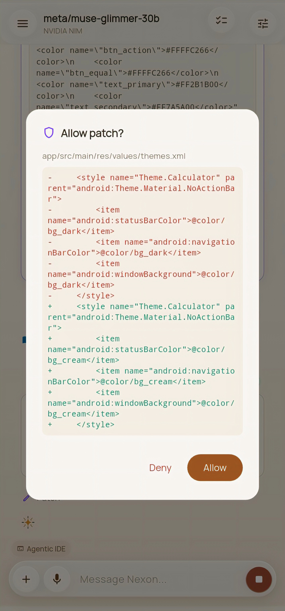
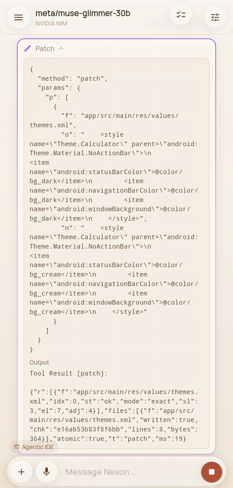
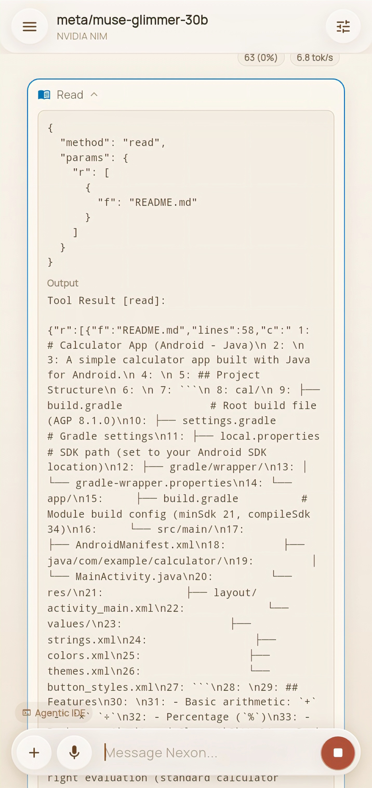
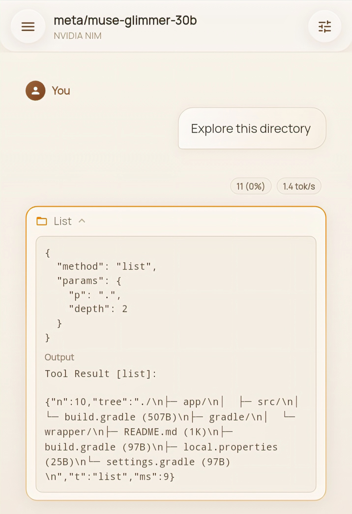
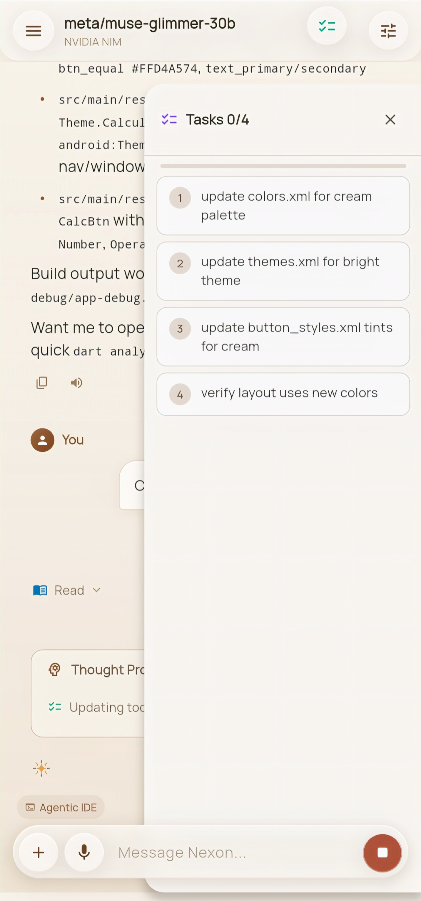
Study mode
Turn any material into practice: Nexon generates quizzes, grades them, and — the part that actually teaches — explains why each wrong answer was wrong, step by step, with worked math solutions rendered in the feed.
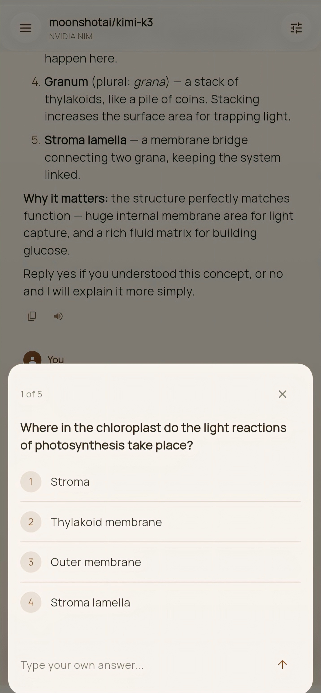
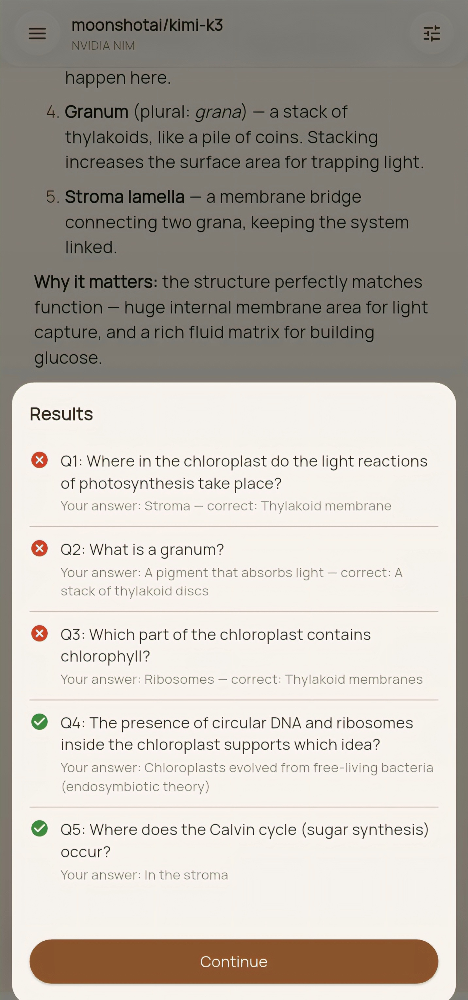
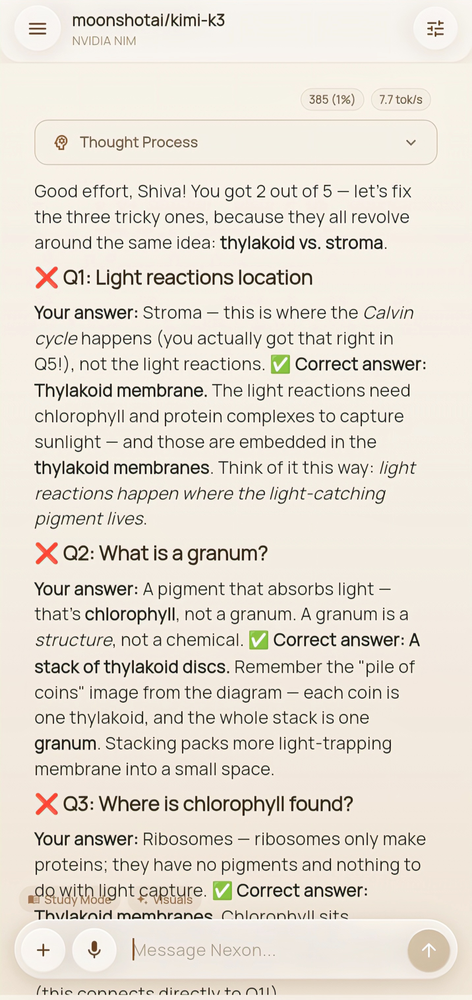
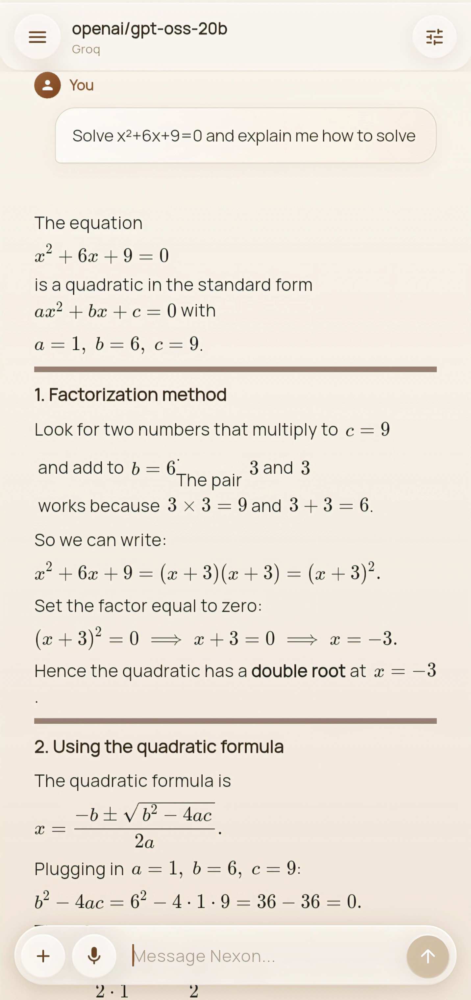
Artifacts
Reports, code, and documents do not arrive as walls of text — they render in the feed as proper artifacts: formatted markdown, syntax-highlighted code, exportable as .md or .docx.
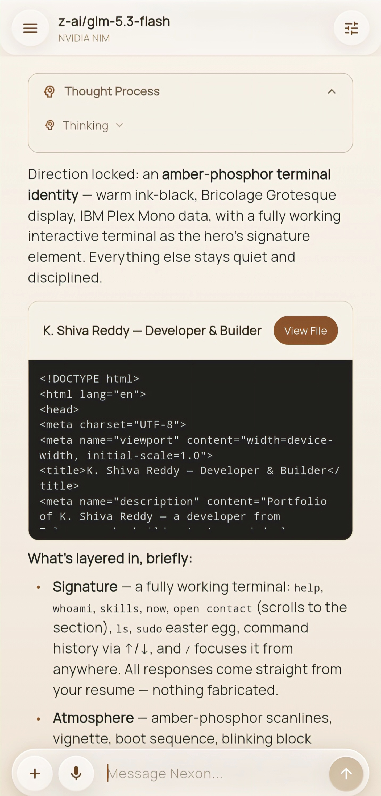
SVG visuals
When the model draws a diagram, it renders as interactive SVG inline — flowcharts, explanations, architecture sketches — not as a code dump.
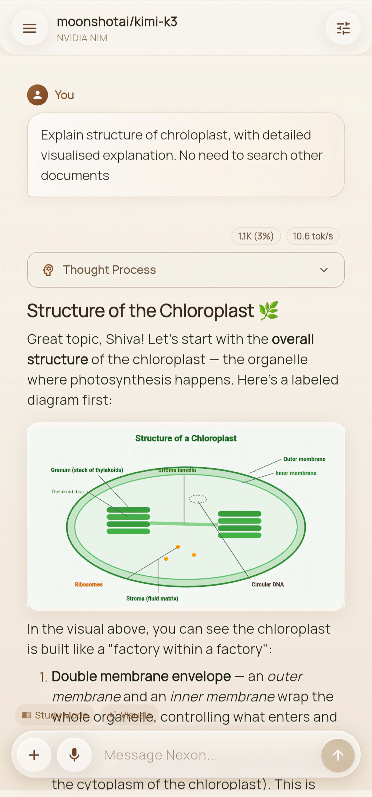
Under the hood
37 providers are built in — Anthropic, OpenAI, Google, Mistral, xAI, DeepSeek, Groq and more — all with your own keys, model lists fetched live, and thinking depth under your control. Underneath it all, a Python bridge runs inside a real Termux userland — GCC, git, python — connected to the app over a local socket.
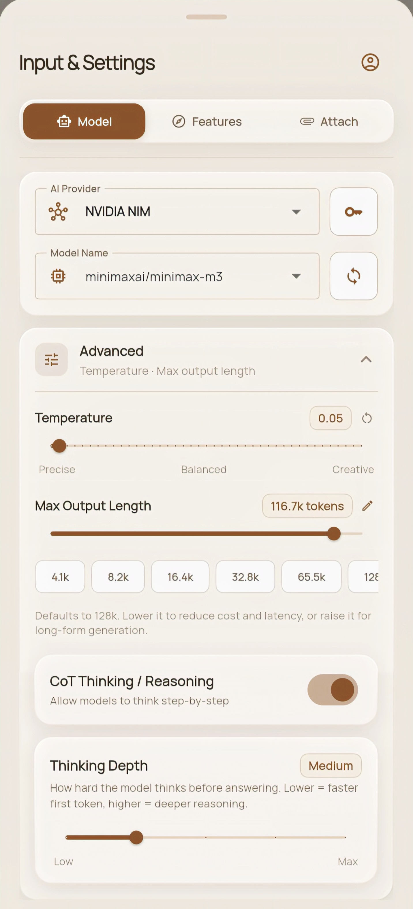
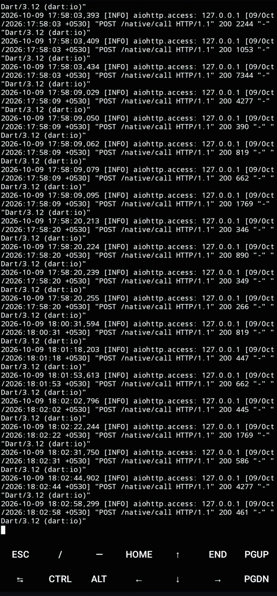
Get the app
Latest release: v1.0.24 — free and open source under Apache-2.0. No account needed to start; your keys and chats stay on your device.
Download APK · v1.0.24 Setup guide Plans